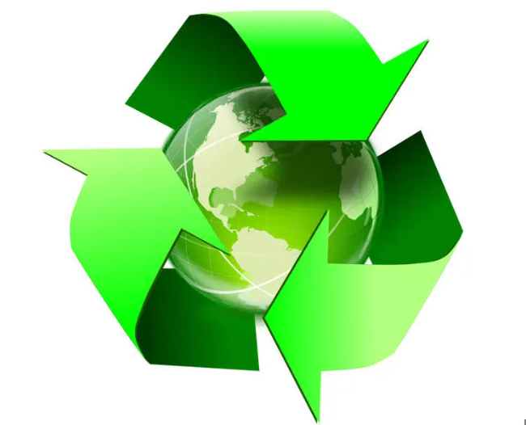
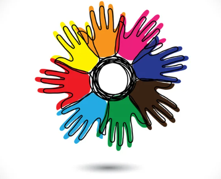

Notre Engagement pour un Avenir Durable
Chez Tickets Mada, nous croyons fermement que la réussite d'une entreprise ne se mesure pas seulement par ses performances économiques, mais également par son impact sur la société et l'environnement. Nous nous engageons à jouer un rôle actif dans le développement durable et à adopter des pratiques responsables qui favorisent le bien-être des communautés et la protection de notre planète.
Responsabilité Environnementale
La protection de l'environnement est au cœur de nos préoccupations. Nous mettons en œuvre des pratiques visant à réduire notre empreinte écologique et à promouvoir une gestion durable des ressources naturelles :
- Réduction des Déchets : Nous avons mis en place des programmes de gestion des déchets pour minimiser notre impact environnemental et promouvoir le recyclage et la réutilisation des matériaux.
- Économie d'Énergie : Nous adoptons des technologies énergétiques efficaces et encourageons des pratiques de conservation de l'énergie dans nos bureaux et installations.
- Transport Durable : Nous privilégions les modes de transport écologiques pour nos opérations logistiques et encourageons l'utilisation des transports en commun et du covoiturage pour nos employés.
- Réduction des Émissions de CO2 : Nous travaillons activement à réduire nos émissions de gaz à effet de serre en optimisant nos processus et en investissant dans des projets de compensation carbone.
Objectifs Futurs
Nous avons fixé des objectifs ambitieux pour l'avenir afin de renforcer notre engagement envers la responsabilité sociale et environnementale. Ces objectifs incluent :
- Atteindre la Neutralité Carbone : Nous visons à atteindre la neutralité carbone d'ici 2030 en réduisant nos émissions et en investissant dans des projets de compensation carbone.
- Augmenter l'Engagement Communautaire : Nous prévoyons d'élargir notre soutien aux initiatives locales et de renforcer notre collaboration avec des organisations à but non lucratif.
- Promouvoir des Pratiques Durables : Nous continuerons à intégrer des pratiques durables dans toutes nos opérations et à encourager nos partenaires à faire de même.
- Améliorer la Transparence : Nous nous engageons à améliorer continuellement la transparence de nos activités et à rendre compte de nos progrès en matière de responsabilité sociale et environnementale.
Conclusion
Chez Tickets Mada, nous sommes convaincus que chaque entreprise a un rôle important à jouer dans la construction d'un avenir meilleur. En adoptant des pratiques responsables et en mettant en œuvre des initiatives durables, nous contribuons à créer un impact positif sur notre société et notre environnement. Nous restons déterminés à poursuivre notre engagement et à relever les défis pour un avenir plus responsable.